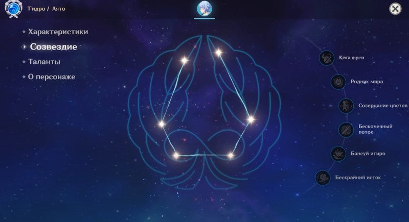
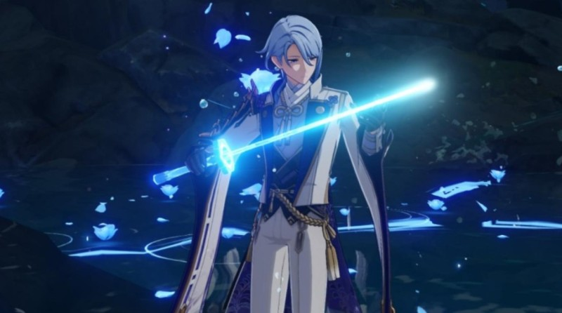
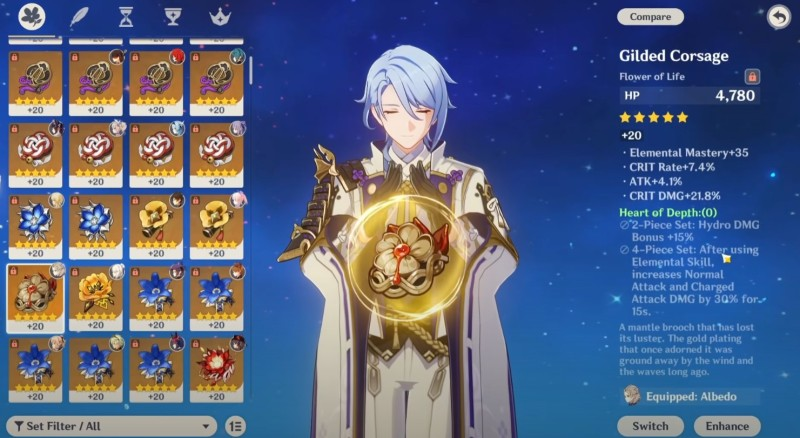

В Genshin Impact Аято Камисато является 5-звездочным персонажем, относящимся к Гидро стихии и использующим в сражениях одноручный меч. В группе он может выполнять функцию основного или второстепенного дамагера с упором на взрыв стихии. В данном гайде вы узнаете про его лучшие билды, оружие и артефакты, а также рекомендуемые для него команды.
Используя свои уникальные способности, данный герой способен наносить значительный Гидро урон, как одиночным врагам, так и большим группам противников, поэтому он оказывается максимально полезным практически в любом сражении. Он также обладает следующими плюсами:
Размер критического урона увеличивается с прокачкой, достигая огромных значений.
Обычные атаки могут наносить Гидро урон благодаря элементальному умению, что упрощает создание мощных стихийных реакций.
Его атаки сложно прерывать благодаря повышенному сопротивлению.
Он может увеличивать урон от обычных ударов своих союзников с помощью взрыва стихии.
Один из пассивных навыков позволяет быстро восстанавливать энергию.
Однако не обошлось без ряда недостатков. К ним можно отнести:
Низкий показатель базовой атаки, если сравнивать с другими основными дамагерами.
Наносимый Гидро урон при использовании элементального умения слишком сильно зависит от максимального здоровья.
После применения стихийного навыка пропадает возможность использовать заряженные удары и атаки в падении.
При использовании обычной атаки «Искусство Камисато: Маробаси» данный персонаж совершает до 5 быстрых ударов мечом. Если же выбрать заряженную атаку, то он сделает выпад вперед и осуществит двойной разрез. В случае атаки в воздухе он устремится к земле, атакуя всех противников на пути, а после приземления нанесет повреждения по площади.
После применения элементального умения «Искусство Камисато: Кека» лидер Ясиро совершит рывок вперед, переходя в состояние Такимэгури канка. На его предыдущем месте при этом появляется иллюзия из воды, которая взрывается при ее атаке или завершения действия навыка, нанося Гидро повреждения по площади.
Что касается уникального состояния, то в нем Аято начинает наносить быстрые атаки с помощью Сюнсуйкэна, причем обычные удары начинают наносить Гидро урон по площади (другие инфузии не способны отменить данную трансформацию). Такимэгури канка дает и другие эффекты:
В случае попадания по врагу возникает статус Намисэн, повышающий наносимые Сюнсуйкэном повреждения, причем их размер зависит от максимального здоровья героя. В обычном виде этот эффект способен суммироваться до четырех раз. Он пропадает после прекращения действия умения.
У героя повышается сопротивление к прерыванию.
Мечник теряет возможность осуществлять заряженные удары и атаки в воздухе.
Данное состояние исчезает, если персонаж уйдет с поля битвы. Если при его действии снова использовать элементальную способность, то нынешняя Такимэгури канка закончится, а все накопленные уровни сбросятся.
Взрыв стихии «Искусство Камисато: Суйю» создает обширную зону вокруг героя, на которой на противников постоянно падают водные клинки, из-за чего они непрерывно получают Гидро повреждения. При этом обычные удары всех членов команды, находящихся в этой области, начинают наносить больше повреждений.
Нельзя также забывать про весьма полезные пассивные таланты данного мечника:
Искусство Камисато: Ежедневная готовка – в случае создания идеального блюда с 18-процентной вероятностью выдается такое же блюдо, но «странного» качества.
Искусство Камисато: Минэ-о матойси киетаки – при использовании элементального навыка герой сразу же получает 2 уровня Намисэн. После взрыва иллюзии Намисэн тут же набирает максимальный левел.
Искусство Камисато: Митиюку хагэцу – если размер энергии персонажа не превышает 40 единиц, и он не находится на поле битвы, то у него начинает восстанавливаться энергия со скоростью 2 единицы в секунду.
Для их разблокировки требуется удача персонажа, выдаваемая при выпадении копий персонажей во время Молитв. Учитывая рандомность данной механики, приготовьтесь потратить немало камней истока на открытие этих созвездий. Впрочем, даже с первым созвездием или вовсе без них данный персонаж способен показать себя с хорошей стороны.
Кека фуси – повышает повреждения от Сюнсуйкэна на 40 процентов при сражении с врагами, здоровье которых равно или ниже 50 процентам.
Родник мира – Намисэн теперь можно увеличить до 5-го уровня, причем уже на 3-м максимальное здоровье героя увеличивается на 50 процентов.
Созерцание цветов – уровень элементального умения возрастает на три. Максимальный левел: 15-й.
Бесконечный поток – при использовании взрыва стихий скорость нанесения обычных ударов у всех участников группы увеличивается на 15 процентов на 15 секунд.
Бансуй итиро – уровень «ульты» возрастает на три. Максимальный левел: 15-й.
Бескрайний поток – в случае попадания атаки по противнику после активации элементального умения герой выполняет два дополнительных удара, наносящих по 300 процентов урона. Бонус от Намисэна на них не распространяется.
Данный персонаж довольно прост в освоении. Если вы планируете сделать его основным дамагером в команде, то вам предстоит часто использовать его элементальное умение, чтобы наносить повышенный Гидро урон противникам. Использовать обычные и заряженные удары без способностей не стоит по причине сравнительно низкого показателя базовой атаки героя.
Помните, что с помощью взрыва стихии Аято может усиливать не только своих союзников, но и себя самого, поэтому старайтесь использовать стихийный навык под действием «ульты» для нанесения максимального урона. Разумеется, не стоит забывать и о взрывах стихий других членов отряда, позволяющих создавать мощные стихийные реакции, например, Пар, Заморозку или Заряжен.
Постарайтесь также максимизировать свое здоровье, шанс критического удара и Гидро урон. Так как Аято будет большую часть времени находиться на поле боя, ему может потребоваться «батарейка» для регулярного применения «ульты».
Если вы решите использовать этого мечника в качестве саб-ДД, то здесь будет еще проще – вам нужно лишь призывать его для выполнения взрыва стихии, чтобы усиливать главного дамагера с упором на обычные удары (например, Еимию) и создавать с ним различные убойные реакции. При этом ему даже не понадобится батарейка, так как он будет заряжаться самостоятельно, находясь вне поля боя.
Основной гидро DPS.Этот билд направлен на усиление обычных ударов персонажа, которые могут наносить гигантский урон под действием стихийного навыка и взрыва. Для этого следует сконцентрироваться на повышении шанса критического попадания и HP. В качестве оружия можно использовать:
Харан Цукисиро фуцу (5-звездочный; шанс критического попадания) – повышает бонус урона всем стихиям на 12 процентов. При активации стихийных умений другими участниками команды обладатель меча получает 1-й уровень Волны-шипа. Максимум можно получить 2 уровня. Эффект проявляется раз в 0,3 секунды. Если герой использует свою элементальную способность, то все Волны-шипы тратятся, причем каждый их уровень повышает повреждения от обычных ударов на 20 процентов на 8 секунд. Сигнатурное оружие Аято, поэтому является лучшим выбором для него.
Драгоценный омут (5-звездочный; шанс критического попадания) – повышает максимальное здоровье на 20 процентов и дает бонус атаки, который равен 1,2 процента от максимальной шкалы жизни. Еще один неплохой вариант меча для Аято.
Рассекающий туман (5-звездочный; критический урон) – повышает криты на 9-44 процента и дает бонус к урону от стихий в размере 24 процентов. При нанесении стихийного урона выдаются особые печати, которые дают еще до 56 процентов бонуса к стихийным повреждениям. Неплохая альтернатива предыдущему клинку.
Кромсатель пиков (5-звездочный; сила атаки) – повышает прочность щита на 20 процентов. В случае попадания увеличивает силу атаки на 4 процента в течение 8 секунд. Эффект может суммироваться до 5 раз и проявиться раз в 0.3 секунды. Помимо всего прочего, под защитой щита бафф силы атаки данного эффекта увеличивается на 100 процентов.
Черный меч (4-звездочный; шанс критического попадания) – повышает повреждения от обычных и заряженных ударов на 20%. При нанесении критических повреждений этими ударами восстанавливается здоровье в размере 60% от показателя атаки. Эффект проявляется раз в 5 секунд.
Черногорский длинный меч (4-звездочный; критический урон) – в случае уничтожения противников сила атаки возрастает на 12 процентов. Эффект длится полминуты и может суммироваться до трех раз. Продолжительность добавочных эффектов не зависит друг от друга.
Предвестник зари (3-звездочный; критический урон) – повышает шанс критического попадания на 14 процентов, если шкала здоровья выше 90 процентов. Бюджетный вариант для Аято, с которым вы сможете сэкономить немало камней истока и при этом уверенно чувствовать себя в бою.
Что касается артефактов, то можете собрать полный сет «Отголоски подношения», 2 части которого повышают показатель силы атаки на 18 процентов. 4 части позволяют с 36-процентной вероятностью активировать Ритуал долины при попадании обычным ударом. В данном состоянии повреждения от простых ударов возрастают на 70 процентов от силы атаки. Эффект может возникнуть не чаще одного раза в 0,2 секунды и пропадает спустя 0,05 секунды после нанесения урона. Если первая атака не активировала бонус, то вероятность его появления при следующем ударе повышается на 20 процентов. Добыть этот сет можно в подземелье «Затерянная долина».
